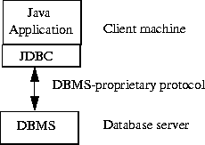
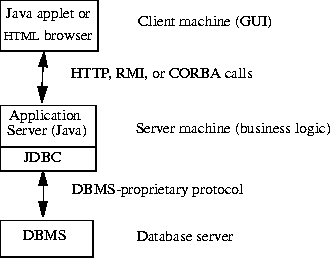
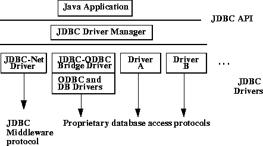

| Contents | Prev | Next | JDBCTM Guide: Getting Started |
Using JDBC, it is easy to send SQL statements to virtually any relational database. In other words, with the JDBC API, it isn't necessary to write one program to access a Sybase database, another program to access an Oracle database, another program to access an Informix database, and so on. One can write a single program using the JDBC API, and the program will be able to send SQL statements to the appropriate database. And, with an application written in the Java programming language, one also doesn't have to worry about writing different applications to run on different platforms. The combination of Java and JDBC lets a programmer write it once and run it anywhere.
Java, being robust, secure, easy to use, easy to understand, and automatically downloadable on a network, is an excellent language basis for database applications. What is needed is a way for Java applications to talk to a variety of different databases. JDBC is the mechanism for doing this.
JDBC extends what can be done in Java. For example, with Java and the JDBC API, it is possible to publish a web page containing an applet that uses information obtained from a remote database. Or an enterprise can use JDBC to connect all its employees (even if they are using a conglomeration of Windows, Macintosh, and UNIX machines) to one or more internal databases via an intranet. With more and more programmers using the Java programming language, the need for easy database access from Java is continuing to grow.
MIS managers like the combination of Java and JDBC because it makes disseminating information easy and economical. Businesses can continue to use their installed databases and access information easily even if it is stored on different database management systems. Development time for new applications is short. Installation and version control are greatly simplified. A programmer can write an application or an update once, put it on the server, and everybody has access to the latest version. And for businesses selling information services, Java and JDBC offer a better way of getting out information updates to external customers.
The following code fragment gives a basic example of these three steps:
Connection con = DriverManager.getConnection ( "jdbc:odbc:wombat", "login", "password"); Statement stmt = con.createStatement(); ResultSet rs = stmt.executeQuery("SELECT a, b, c FROM Table1"); while (rs.next()) { int x = getInt("a"); String s = getString("b"); float f = getFloat("c"); }
The answer is that you can use ODBC from Java, but this is best done with the help of JDBC in the form of the JDBC-ODBC Bridge, which we will cover shortly. The question now becomes, "Why do you need JDBC?" There are several answers to this question:
More recently, Microsoft has introduced new APIs beyond ODBC: RDO, ADO, and OLE DB. These designs move in the same direction as JDBC in many ways, that is, in being an object-oriented database interface based on classes that can be implemented on ODBC. However, we did not see compelling functionality in any of these interfaces to make them an alternative basis to ODBC, especially with the ODBC driver market well-established. Mostly they represent a thin veneer on ODBC. This is not to say that JDBC does not need to evolve from the initial release; however, we feel that most new functionality belongs in higher- level APIs such as the object/relational mappings and embedded SQL mentioned in the previous section.
In the two-tier model, a Java applet or application talks directly to the database. This requires a JDBC driver that can communicate with the particular database management system being accessed. A user's SQL statements are delivered
to the database, and the results of those statements are sent back to the user. The
database may be located on another machine to which the user is connected via a
network. This is referred to as a client/server configuration, with the user's
machine as the client, and the machine housing the database as the server. The
network can be an intranet, which, for example, connects employees within a corporation, or it can be the Internet.

In the three-tier model, commands are sent to a "middle tier" of services,
which then send SQL statements to the database. The database processes the SQL
statements and sends the results back to the middle tier, which then sends them to
the user. MIS directors find the three-tier model very attractive because the middle tier makes it possible to maintain control over access and the kinds of updates
that can be made to corporate data. Another advantage is that when there is a middle tier, the user can employ an easy-to-use higher-level API which is translated
by the middle tier into the appropriate low-level calls. Finally, in many cases the
three-tier architecture can provide performance advantages.

Until now the middle tier has typically been written in languages such as C or C++, which offer fast performance. However, with the introduction of optimizing compilers that translate Java bytecode into efficient machine-specific code, it is becoming practical to implement the middle tier in Java. This is a big plus, making it possible to take advantage of Java's robustness, multithreading, and security features. JDBC is important to allow database access from a Java middle tier.
One way the JDBC API deals with this problem is to allow any query string to be passed through to an underlying DBMS driver. This means that an application is free to use as much SQL functionality as desired, but it runs the risk of receiving an error on some DBMSs. In fact, an application query need not even be SQL, or it may be a specialized derivative of SQL designed for specific DBMSs (for document or image queries, for example).
A second way JDBC deals with problems of SQL conformance is to provide ODBC-style escape clauses, which are discussed in section 4.1.5, "SQL Escape Syntax in Statement Objects."
. The escape syntax provides a standard JDBC syntax for several of the more common areas of SQL divergence. For example, there are escapes for date literals and for stored procedure calls.
For complex applications, JDBC deals with SQL conformance in a third way.
It provides descriptive information about the DBMS by means of the DatabaseMetaData interface so that applications can adapt to the requirements and
capabilities of each DBMS.
Because the JDBC API will be used as a base API for developing higher-level database access tools and APIs, it also has to address the problem of conformance for anything built on it. The designation "JDBC COMPLIANTTM" was created to set a standard level of JDBC functionality on which users can rely. In order to use this designation, a driver must support at least ANSI SQL-2 Entry Level. (ANSI SQL-2 refers to the standards adopted by the American National Standards Institute in 1992. Entry Level refers to a specific list of SQL capabilities.) Driver developers can ascertain that their drivers meet these standards by using the test suite available with the JDBC API.
The "JDBC COMPLIANTTM" designation indicates that a vendor's JDBC implementation has passed the conformance tests provided by JavaSoft. These conformance tests check for the existence of all of the classes and methods defined in the JDBC API, and check as much as possible that the SQL Entry Level functionality is available. Such tests are not exhaustive, of course, and JavaSoft is not currently branding vendor implementations, but this compliance definition provides some degree of confidence in a JDBC implementation. With wider and wider acceptance of the JDBC API by database vendors, connectivity vendors, Internet service vendors, and application writers, JDBC is quickly becoming the standard for Java database access.
http://java.sun.com/products/jdbc
The JDBC driver manager is the backbone of the JDBC architecture. It actually is quite small and simple; its primary function is to connect Java applications to the correct JDBC driver and then get out of the way.
The JDBC driver test suite provides some confidence that JDBC drivers will run your program. Only drivers that pass the JDBC driver test suite can be designated JDBC COMPLIANTTM.
The JDBC-ODBC bridge allows ODBC drivers to be used as JDBC drivers.
It was implemented as a way to get JDBC off the ground quickly, and long term
will provide a way to access some of the less popular DBMSs if JDBC drivers are
not implemented for them.

The following chart shows the four categories and their properties:
| DRIVER CATEGORY | ALL JAVA? | NET PROTOCOL |
|---|---|---|
| 1 - JDBC-OCBC Bridge | No | Direct |
| 2 - Native API as basis | No | Direct |
| 3 - JDBC-Net | Yes | Requires Connector |
| 4 - Native protocol as basis | Yes | Direct |
To get the latest information on drivers, check the JDBC web page at http://
java.sun.com/products/jdbc. The first vendors with Category 3 drivers
available were SCO, Open Horizon, Visigenic, and WebLogic. JavaSoft and
Intersolv, a leading database connectivity vendor, worked together to produce the
JDBC-ODBC Bridge and the JDBC Driver Test Suite.